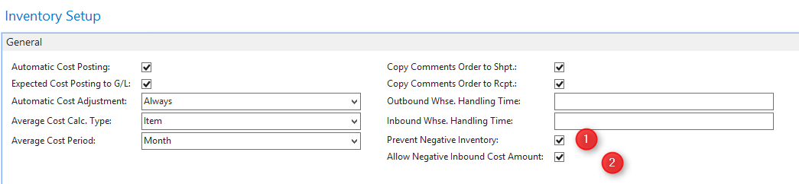

Chart of Commitments Accounts
General Information
The current status of all commitments can be viewed in the Chart of Commitments Accounts.

The Chart of Commitments Accounts shows all posted liabilities and discharges. Clicking on the
Entries
icon will bring users to the underlying commitments entries and – if these were automatically generated from the sales order – from there they can go to the causal invoice ledger entries, waste ledger entries, equipment ledger entries, transport ledger entries, or personnel ledger entries.
The Chart of Commitments Accounts only shows the commitments with the commitments type Content.
In addition to the Quantity (Acc.) column, two other fields can be shown:
Quantity Liable (Acc.) shows the total quantity of all entered liabilities
Quantity Discharged (Acc.) shows the total quantity of all entered discharges.
Users can understand the Quantity Liable (Acc.) as the budgeted quantity of commitments, so that the juxtaposition of liability and discharge enables them to directly compare the original agreement with the current degree of fulfillment.
The Chart of Commitments Accounts offers all the functions of a default table of accounts in Dynamics NAV. For example, subtotals can be show that summarize the quantity of various commitments. This is particularly useful when there are different commitments with the same content type; by showing the commitments subtotals, users can immediately and transparently see the total quantity of liabilities for this content type (e.g. a certain quantity of product to be shipped or waste material or a number of hours of service to be rendered).
The Chart of Commitments Accounts offers an additional feature that other tables of accounts do not have: Accounts can be reassigned. What this means is that the assignment of accounts to certain larger categories, and with it the creation of subtotals, does not have to take place based on the Commitments No.
Commitments accounts and their sums can be shifted to a chart of accounts. To do so, use the
Adjust Commitments Accounts
in
Periodic Activities
under the
Commitments
tab. Note that, depending on the number of commitments entries they contain, it might take some time to shift one or more accounts.